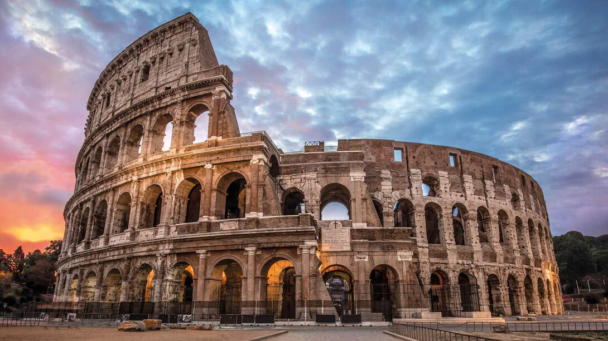

El Coliseo Romano es una de las construcciones más famosas de la Antigua Roma.Se utilizaba principalmente para espectáculos públicos.

El Coliseo Romano se encuentra en Roma , Italia, en el centro de la ciudad.Cerca del Foro Romano
Su construcción comenzó alrededor del año 70 d. C. y terminó en el año 80 d. C.
Mide aproximadamente 189 metros de largo, 156 metros de ancho y 48 metros de alto. Podía recibir a miles de espectadores.